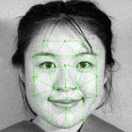

Facial Expression Resources Page
Links to research groups and other resources concerning facial expression perception, recognition and synthesis.
Researchers
Experimental Psychology/Cognitive Science
Automatic Facial Expression Recognition & Cognitive Engineering
Conferences & On-line Proceedings
ICAFGR
ATR Symposia
General
Facial Expression Databases
Related Sites
Demos etc...
Home